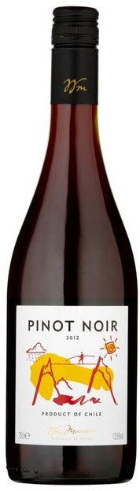

Chilean Pinot Noir
Chilean Pinot Noir is one of the most criminally undervalued wine categories on the planet.
Quite frankly I can’t believe it’s still the secret that it is to so many wine lovers.
Pinot Noir is one of the single most popular grapes in the world. A “truism” people like to throw around is that there is
no such thing as a good deal in Pinot Noir. Well Chile puts the lie to that pretty easily.
One of the things that sets Chile apart from other wine growing countries is the large number of different microclimates,
elevations, soil types and such that exist. With more diversity in their terroir than most countries they have the ability
to do well with a wide array of grapes. Another specific thing they have in their favor is some 3,000 miles of coast line.
Pinot thrives in cooler climates and Chile has numerous vineyard sites that are tailor made for growing this notoriously
difficult to master grape. Add to that the fact that most wine drinkers simply have yet to wrap their brain around great
Pinot Noir coming from South America and you have a somewhat perfect storm of incredible values on terrific Pinot Noir loaded
with varietal typicity.
The World’s Most Undervalued Wines: Chilean Pinot Noir
By Gabe Sasso
$10